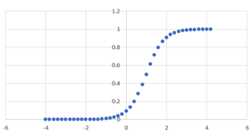

化学平衡論
基質の結合曲線，対数表示
\( \Large \displaystyle P_B = \frac{[L]}{K + [L] } \)
を並べ替えて，
\( \Large \displaystyle [L] = P_B \cdot K + P_B \cdot [L] \)
\( \Large \displaystyle [L] = \frac{P_B \cdot K}{1 - P_B } \)
\( \Large \displaystyle [L]_{10} \equiv log_{10} [L] = log_{10} \frac{P_B \cdot K}{1 - P_B } \)
\( \Large \displaystyle \frac{P_B \cdot K}{1 - P_B } = 10^{[L]_{10}} \)
\( \Large \displaystyle P_B \cdot K = 10^{ [L]_{10}} - 10^{ [L]_{10}} \cdot P_B \)
\( \Large \displaystyle P_B \left( K + 10^{ [L]_{10}} \right) = 10^{ [L]_{10}}\)
\( \Large \displaystyle P_B = \frac{10^{ [L]_{10}}}{ K + 10^{ [L]_{10}} } = \frac{1}{ 1 + 10^{ -[L]_{10}} \cdot K } \)
となります．
ここで，常用対数と自然対数の関係から，
\( \Large \displaystyle 10^{-x} = e^y \rightarrow y = ln 10^{-x} = -x \ ln 10 \)
\( \Large \displaystyle 10^{-x} = e^y =e^{ -x \ ln 10} = e^{-2.3x} \)
となるので，
\( \Large \displaystyle P_B = \frac{1}{ 1 + e^{ -2.3 [L]_{10}} \cdot K } \)
ここで，分母のKも指数表示したいので，
\( \Large \displaystyle K = e^z\)
\( \Large \displaystyle ln K = z\)
\( \Large \displaystyle K = e^{ln K} \)
\( \Large \displaystyle log K = log e^z = z \ log e = 0.43 z \)
\( \Large \displaystyle z = \frac{1}{0.43} log K = 2.3 \ log K \)
\( \Large \displaystyle K = e^{2.3 \ log K} \)
として，
\( \Large \displaystyle P_B = \frac{1}{ 1 + e^{2.3 \ log K} e^{ -2.3 [L]_{10}} }= \frac{1}{ 1 + e^{ -2.3( [L]_{10} - log \ K)}} \)
となり， これはシグモイド型関数となります．
シグモイド曲線とは，
\( \Large \displaystyle y= \frac{1}{ 1 + e^{ - a( x - x_0)}} \)
であり，
x= -∞，においては，y = 0
x= ∞，においては，y = 1
x= x0，においては，y=1/2
となります．

次に，常用対数表示の詳細について検討します．